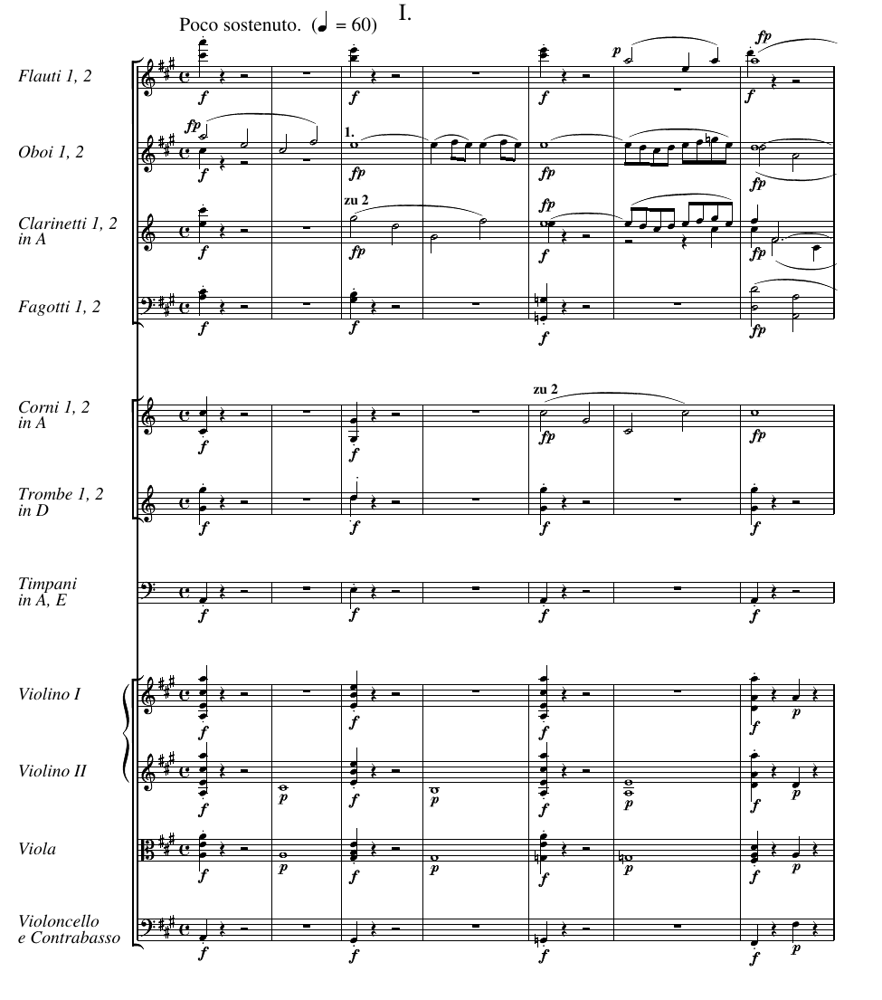
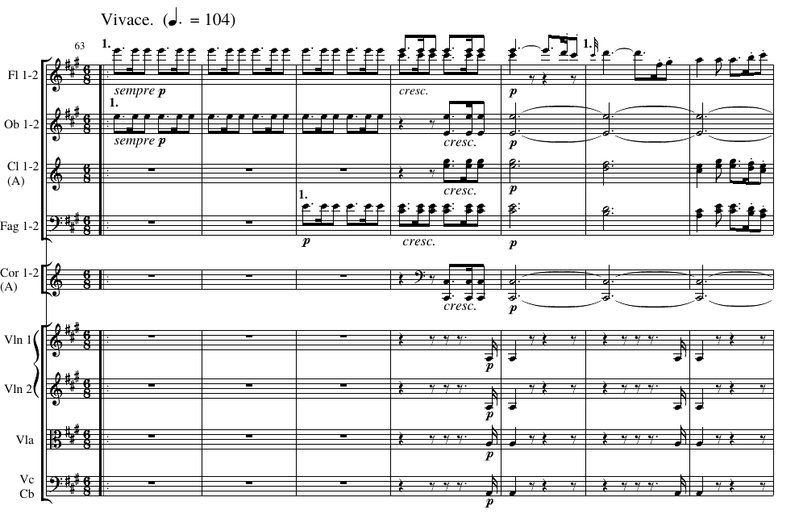
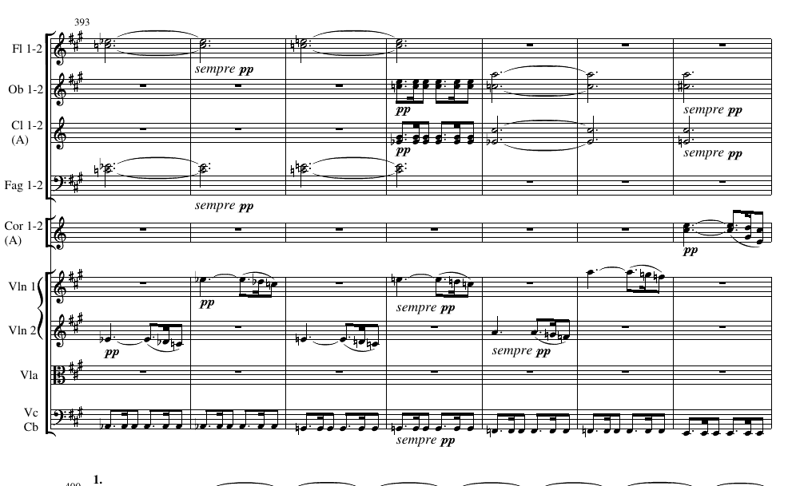
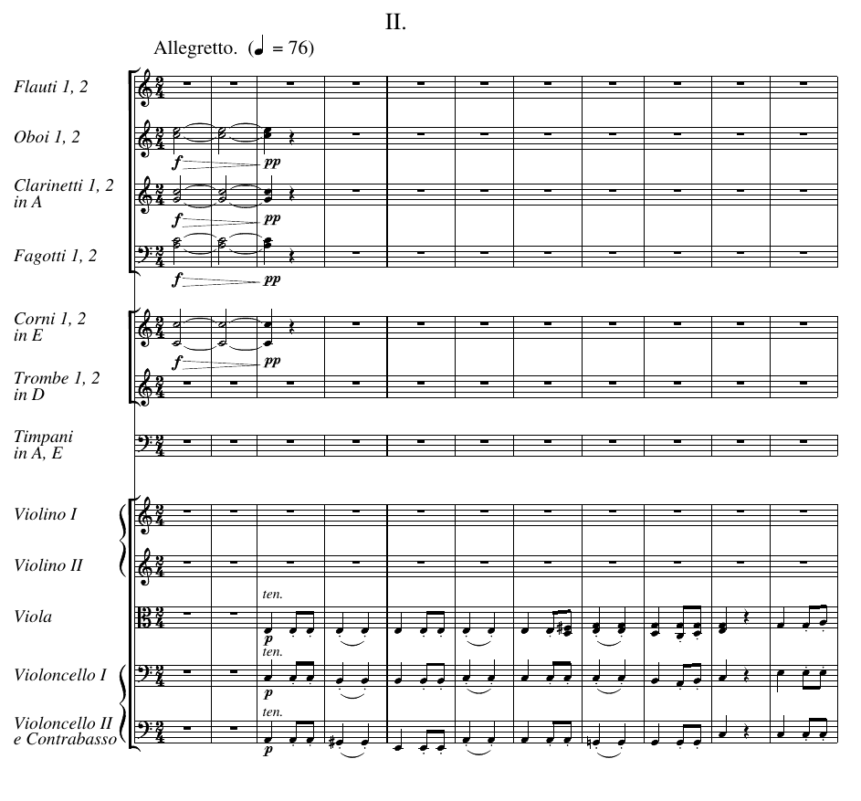
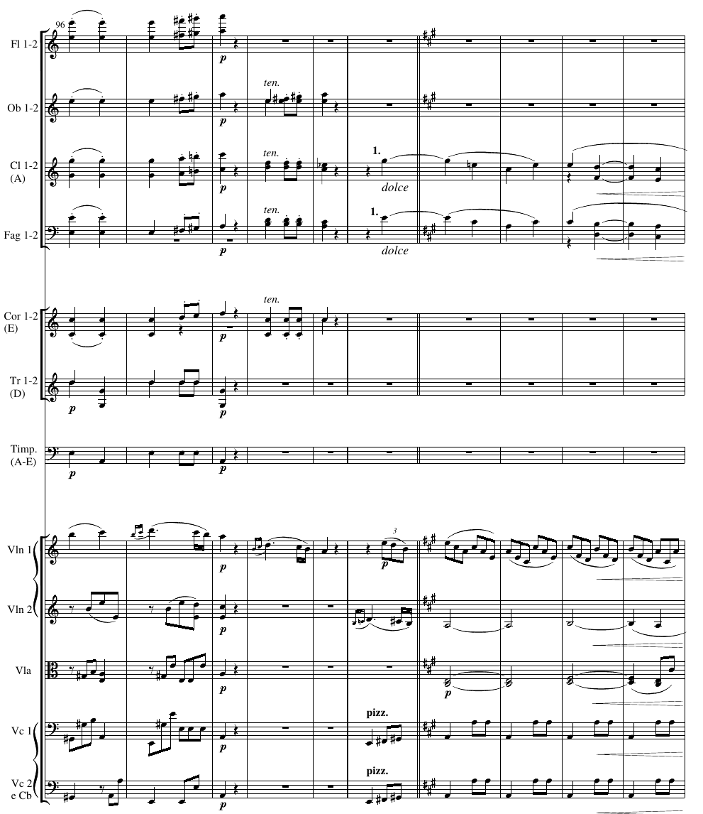
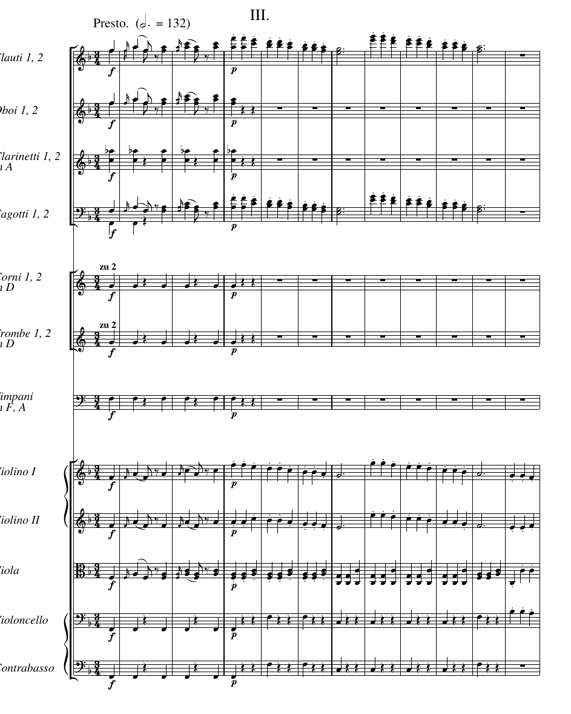
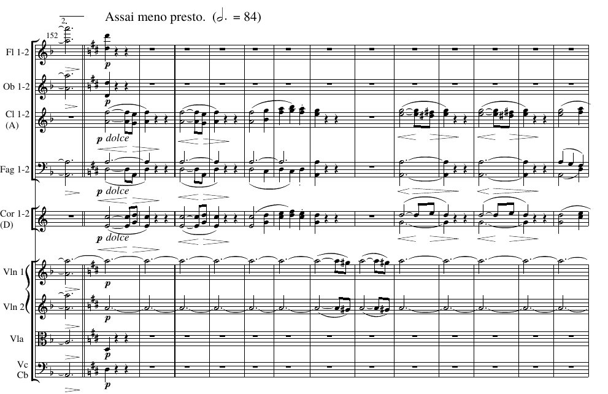
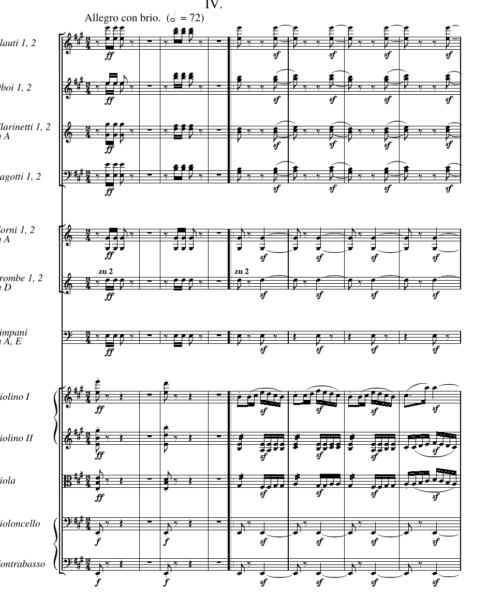
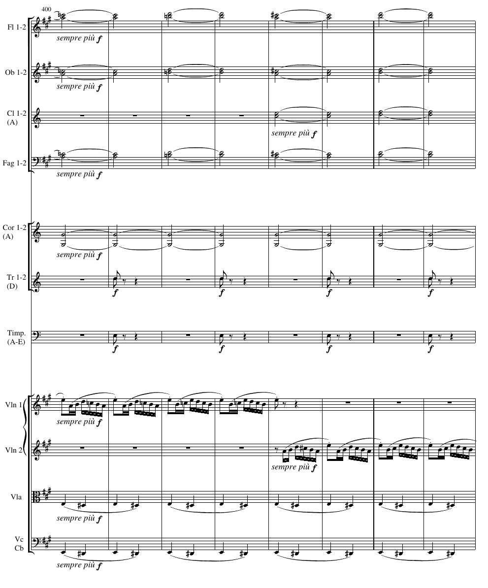

Introduction
Beethoven finished the Seventh in 1812, and it had to wait until December 1813 for its first performance. He conducted it himself, deaf by then, at a benefit concert for soldiers wounded in the Napoleonic wars. The orchestra was full of famous musicians. One of them, Louis Spohr, left a vivid account of Beethoven on the podium: crouching down for soft passages and jumping into the air for loud ones. The Allegretto was so well received that the audience made the orchestra play it again.
The same program also gave the first performance of Wellington's Victory, a battle piece that got even more applause that night. The Seventh outlasted it by a wide margin.
Three things to carry into every movement:
- One rhythm per movement. Each movement is built around a single short rhythmic figure that keeps coming back: a lilting dotted dance in the first, a steady tread in the second, a rushing triple beat in the third, a whirl in the finale.
- Detours from home. The symphony is in A, but the first movement visits C major and F major, and the scherzo is in F with a trio in D. The detours make each return feel bright.
- Crescendo as a method. Beethoven repeats a pattern and adds volume and instruments each time. The ends of the first and last movements are built this way.
The sound
This is Beethoven's standard orchestra, only leaner than the one in the "Eroica": strings, pairs of flutes, oboes, clarinets and bassoons, two horns, two trumpets and timpani. There is no piccolo, no trombones and no other percussion, and there is no third horn. What is unusual is not the lineup but how it is used. The horns, trumpets and timpani join in the rhythm almost constantly, so the whole orchestra drives forward. The horns also change their tuning crook from movement to movement (A, E, D, then A again), so each movement gets its own color from them.
1. Poco sostenuto – Vivace
Listening map
- INTRODUCTION Loud chords open the symphony and alternate with a quiet oboe tune and held notes. Soon the strings climb in long scales. The introduction lasts about 60 bars, slow and spacious.
- THE HANDOFF The introduction narrows down to one repeated note, E. The flutes and oboes tap it out in a dotted rhythm, and that rhythm is the dance before the tune has even arrived.
- EXPOSITION The flute states the dance tune over that same rhythm. It does not stop for the rest of the movement.
- DEVELOPMENT The tune and the rhythm pass around the orchestra, moving through surprising keys, including episodes in C major and F major.
- CODA From bar 391 the cellos and basses rock on a short figure while the violins repeat a two-bar phrase. The volume starts at a whisper and builds and builds.

img/m1-intro.png.
img/m1-vivace.png.
img/m1-coda.png.What to listen for
Count how long the dotted rhythm goes without a break. It begins at the end of the introduction and carries on, almost unbroken, to the final chord. The coda is where you can hear it most clearly: the same small pattern, over and over, getting louder with each pass.
↑ Back to top2. Allegretto
Listening map
- OPENING CHORD The winds and horns sound one dark chord, loud at first and then dying away.
- THE TREAD Violas, cellos and basses begin a steady walking rhythm, very quietly: long, short, short, long, long. The rest of the movement is built on it.
- BUILD The tune is played again and again. Each time more instruments join, until the whole orchestra plays it at full volume (around bar 78).
- MAJOR EPISODE At bar 101 the key brightens to A major. The clarinets and bassoons sing a smooth, consoling tune over gently moving triplets in the violins and plucked low strings.
- RETURN AND FUGUE The minor theme comes back, and the strings begin to enter one after another, in the manner of a fugue.
- ENDING The strings play pizzicato, the sound thins, and the movement closes with a short chord.

img/m2-theme.png.
img/m2-clarinet.png.What to listen for
The tune barely moves. It is mostly one rhythm and a few notes. What changes is how many instruments play it and how loud they are. Notice how the major episode feels like light coming through a window, and how quickly the minor tread takes over again.
↑ Back to top3. Presto – Assai meno presto
Listening map
- SCHERZO A very fast piece full of quick jokes. Loud chords are answered by whispers, and the dynamics swap without warning.
- TRIO (bar 152) The tempo drops. The winds and horns sing a broad tune in D major, often said to come from an Austrian pilgrims' hymn, while the strings mostly hold long notes below.
- SCHERZO AGAIN (bar 235) The fast music returns, much as before.
- TRIO AGAIN (bar 405) The hymn returns a second time. Most scherzos play their trio once, so this is the unusual part.
- SCHERZO, THEN CODA (bars 500 and 643) The scherzo comes round a third time. The trio starts to come back once more but is cut off by a few abrupt chords.

img/m3-scherzo.png.
img/m3-trio.png.What to listen for
The pattern is fast, slow, fast, slow, fast, and then one more attempt at slow. Once you hear the scherzo come back for the second time, you will start to expect the hymn, and the abrupt ending is more fun because of it.
↑ Back to top4. Allegro con brio
Listening map
- OPENING Two crashing chords from the whole orchestra, and then the violins start to whirl, with sharp accents landing on the offbeats.
- THE RUSH The whirling figure and its accents are passed around the orchestra. It rarely stops for breath.
- CODA Near the end the violas, cellos and basses rock on a two-note figure, bar after bar, while the markings call for the music to get louder and louder. Then a rush of scales and a string of chords bring the symphony to a close.

img/m4-open.png.
img/m4-coda.png.What to listen for
This is the same method as the end of the first movement, but with more force. Follow the bass line in the last minute. It hardly moves, and the energy comes from everything above it getting louder.
↑ Back to topRecommended recordings
| Conductor · Orchestra | Character |
|---|---|
| Carlos Kleiber · Vienna Philharmonic | Famously electric and driven. One of the most admired recordings of the piece. |
| Otto Klemperer · Philharmonia | Broad, spacious and weighty. |
| Nikolaus Harnoncourt · Vienna Philharmonic (live) | A relaxed introduction, then a gradual build. The dance feeling is strong. |
| John Eliot Gardiner · Orchestre Révolutionnaire et Romantique (live) | Period instruments: lighter, quicker and sharper-edged. |